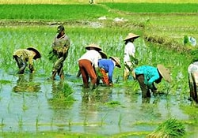
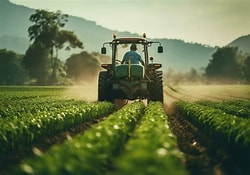

Sustainable Development Goal 2 is one of 17 global goals set by the United Nations. The whole point is to make sure nobody goes hungry anywhere by the year 2030. This means making sure everyone has access to enough safe and nutritious food all year round. It also covers things like supporting farmers, improving agriculture, and growing food in ways that can last into the future.
Hunger is still one of the biggest problems we face today. Millions of people do not get enough to eat, and many more do not get the right nutrition. When people go hungry, it affects their health, their education, and their chances in life. Things like conflict, rising food prices, climate change, and poverty all make it harder for people to get the food they need. If we can tackle hunger, we help solve many other problems too.
